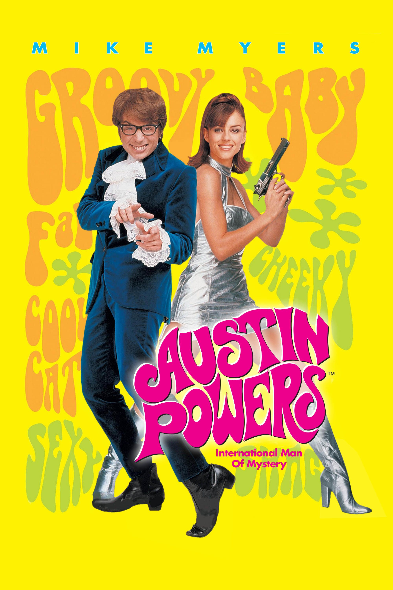
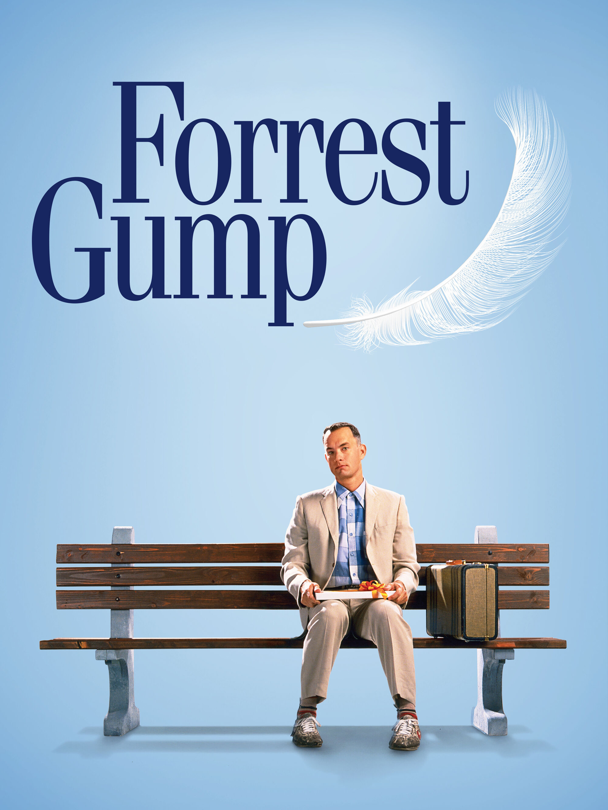
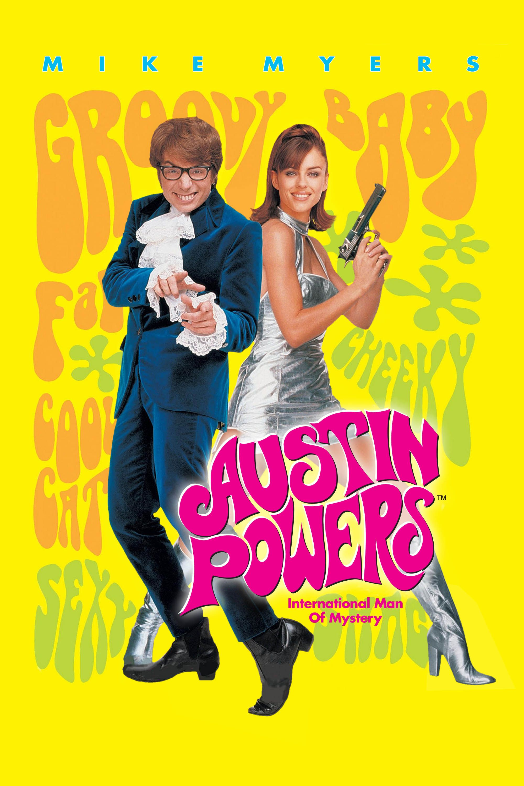
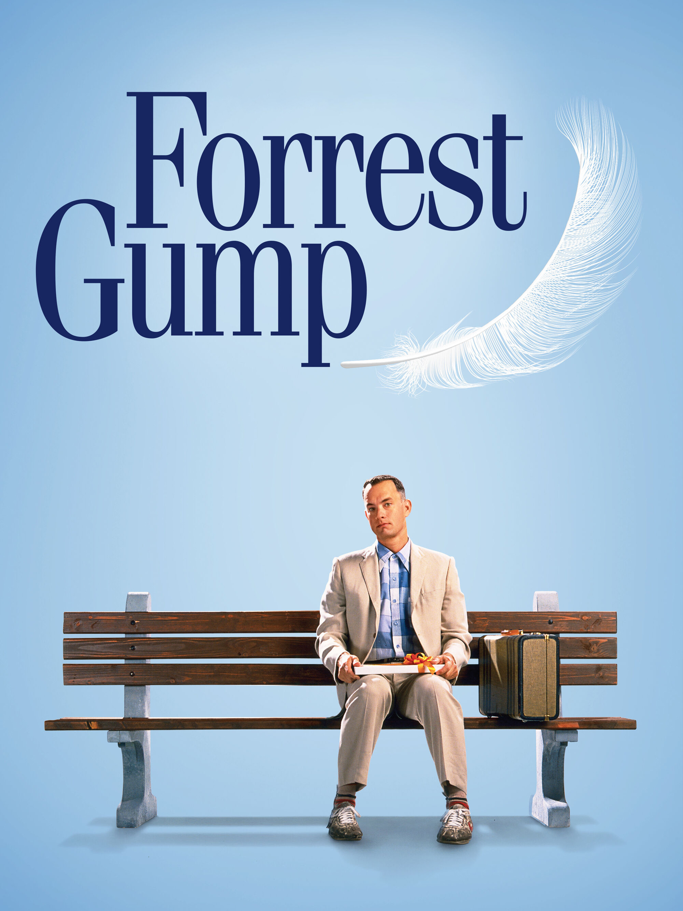

Wendy I can fly!
This was one of the first movies that I had to watch multiple times and each time I would pick up on more and more jokes.
It takes a lot of genius to make a movie like this.
Madness? This is SPARTA!
After reading the graphic novel this movie was announced. I loved how it stuck to the source material
Really? Blow-dart in my butt cheek.
You're never too old to enjoy a fun movie. I just like it.
Oh I'm sorry, did I break your concerntration? You were finished? Well then allow me to retort.
From start to finish, which is the start and everything in between, this movie is excellent!
Voilà!
In view, a humble vaude villian veteran, cast vicariously as both victim and villain by the vicissitudes of Fate. This visage, no mere veneer of vanity, is a vestige of the vox populi, now vacant, vanished. However, this valorous visitation of a by-gone vexation stands vivified, and has vowed to vanquish these venal and virulent vermin vanguarding vice and vouchsafing the violently vicious and voracious violation of volition.
The only verdict is vengeance; a vendetta, held as a votive, not in vain, for the value and veracity of such shall one day vindicate the vigilant and the virtuous.
Verily, this vichyssoise of verbiage veers most verbose, so let me simply add that it is my very good honor to meet you and you may call me V.
Yep, what he said.
Who throws a shoe? Honestly! You fight like a woman.
There's just so many great one-liners in this movie
Hasta la vista, baby
With special effects that still hold-up today, this movie was ahead of its time. No pun intended.
Life if like a box of chocolates
The movie I based my whole adult life philosophy around. Adpetly named the "Forrest Gump Approach to Life" it is the philosophy of don't think, just do and opportunities will come from your actions.